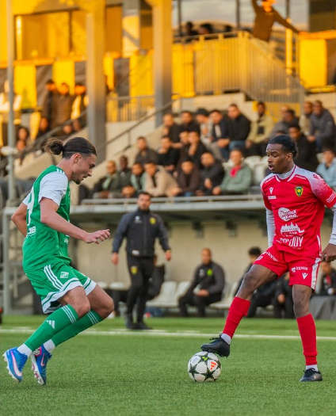
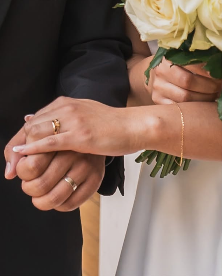
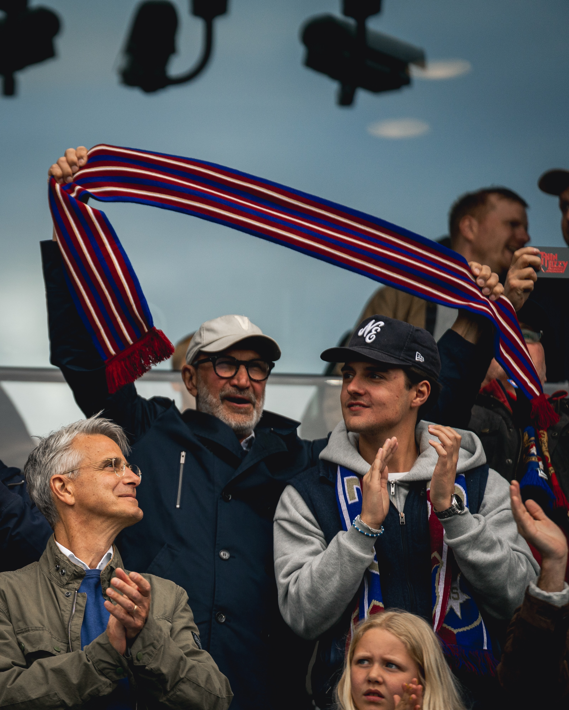
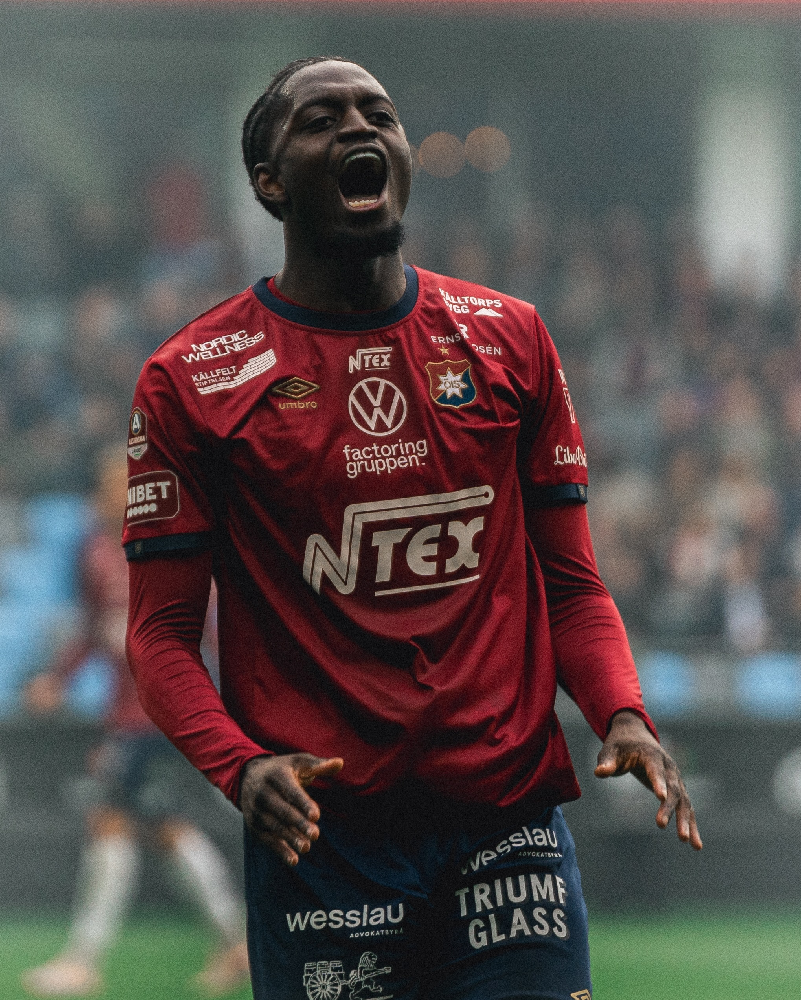
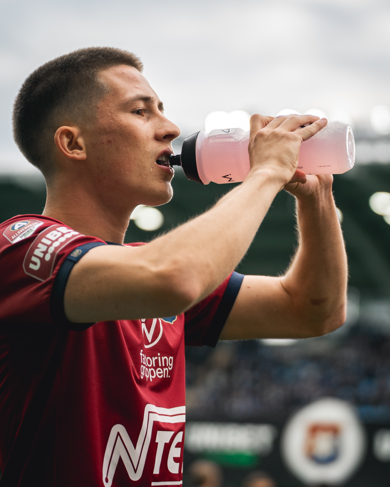
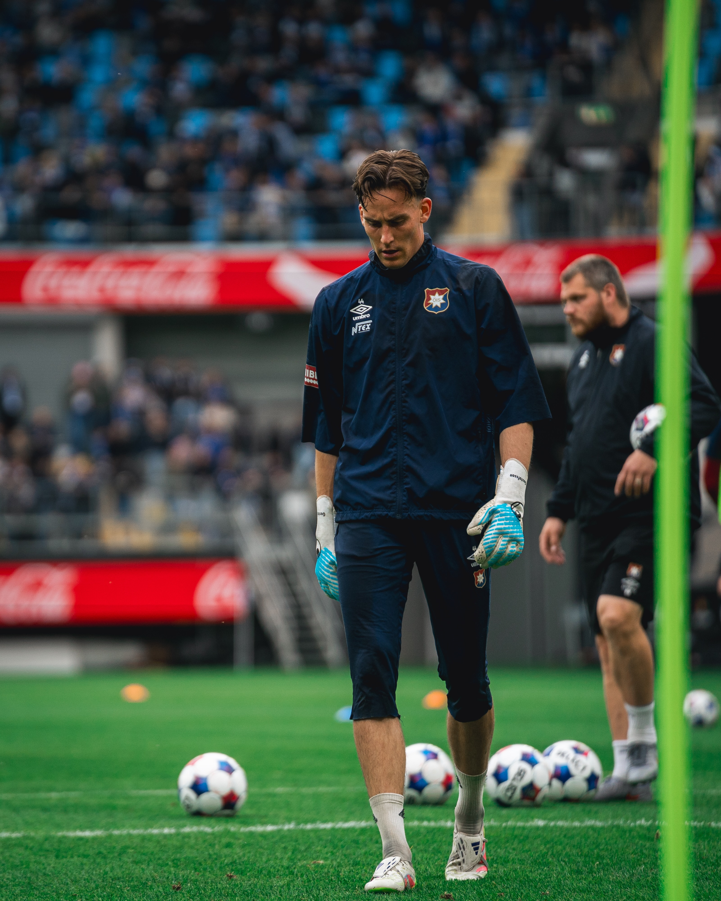
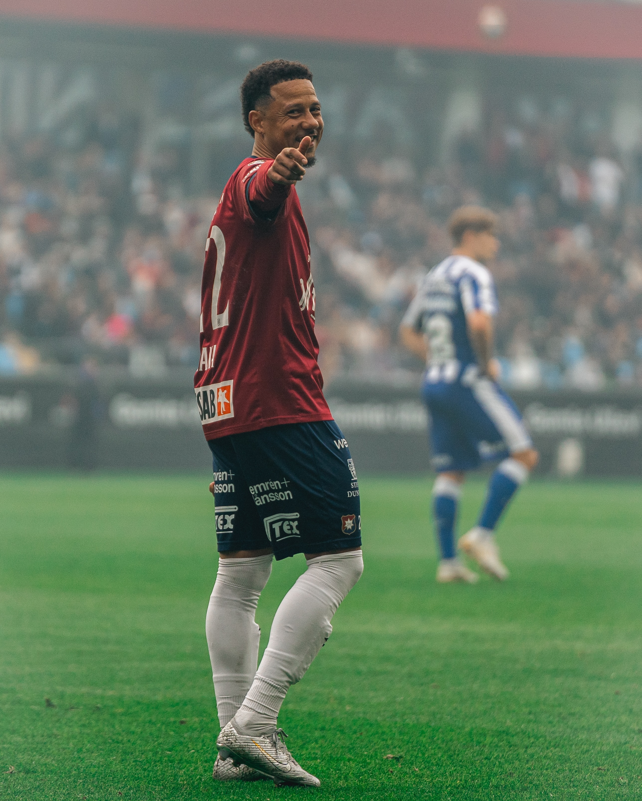

Boka
Välj en tid som passar dig — dag, kväll eller helg.
Bilder och film som berättar din historia – naturligt, tidlöst och med känsla.

Välj en tid som passar dig — dag, kväll eller helg.
Jag guidar dig genom sessionen i lugn takt. Inget känns forcerat.
Välj dina favoriter och få färdiga bilder levererade digitalt.
“Jag kände mig helt avslappnad trots att jag normalt inte gillar att bli fotograferad. Erik skapade en trygg känsla och bilderna blev helt magiska.”
— Maja


Reels, sport, event och socialt innehåll med tempo, känsla och en tydlig riktning.
Ett urval från matcher, träningar och ögonblick där allt händer på en sekund.





Fotbollen på Hisingen berättad från insidan — genom matchbilder, intervjuer, reels och rörligt innehåll.
Utforska @hisingsboll ↗Jag heter Erik och har fotograferat människor sedan 2014 — från intima porträtt till stora bröllop. Jag gillar riktigt ljus framför uppstyrda poser och tror att de bästa bilderna uppstår när ingen längre tänker på kameran.
Baserad i Stockholm, men reser gärna dit uppdraget tar mig.
En timmes fotografering och digitalt galleri med minst 20 redigerade bilder.
Från 1 800 krHeldagstäckning och ett komplett digitalt galleri från er stora dag.
Från 18 000 krPorträtt, kampanjbilder och innehåll för hemsida och sociala medier.
Från 3 500 krDiskret dokumentation av konferenser, fester och lanseringar.
Från 2 900 krFoto, film eller båda. Säkra din tid redan idag.
Boka session